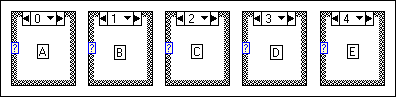
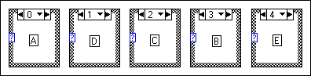

You can swap the visible case subdiagram of a Case structure with another case without affecting the other subdiagrams or the order of the cases as they appear in the shortcut menu. Only the subdiagrams of the two cases change. You can swap cases in Case structures of three or more subdiagrams. Refer to the Case Structure - Selector Data Types VI in the labview\examples\Structures directory for an example of using Case structures.
Complete the following steps to swap the visible subdiagram with another subdiagram.
In the following example of subdiagrams in a Case structure, case 0 contains subdiagram A, case 1 contains subdiagram B, and so on up to case 4, which contains subdiagram E.

You can swap case 1 with the subdiagram with case 3, causing LabVIEW to swap the subdiagrams, as shown in the following example.
